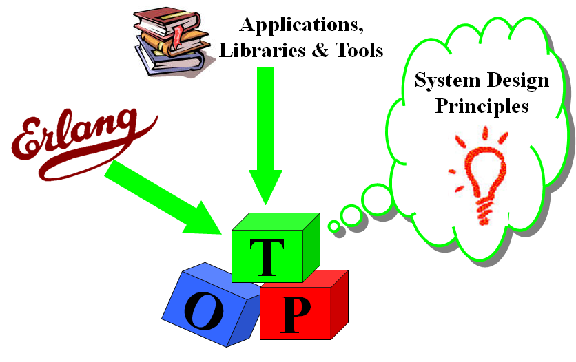

A sip of Elixir
Jos van Bakel
Created: 2022-06-07 Tue 22:11
Pre
- Please mute your mic
- Ask questions through chat
Agenda
- What is it?
- Why?
- A bit of history
- What's different?
- Short tour
- Demo
- Showcases
- Conclusion
What is it?
| Kotlin | Elixir | |
|---|---|---|
| Primary | Java | Erlang |
| Others | Groovy, Scala | LFE, Alpaca |
| VM | JVM | BEAM |

Figure 1: Erlang ecosystem
What is it?
- Concurrent
- Highly available
- Distributed
- Scalable
- Fault tolerant
What is it?
Why?
- Advent of Code 2019
- Vialer Middleware rewrite (VMex)
A bit of history
What's different?
Why does restarting work?
131 out of 132 bugs are transient bugs – Jim Gray in Why Do Computers Stop and What Can Be Done About It? (1985)
Short tour
Processes
iex> pid = spawn(fn -> 1 + 2 end)
#PID<0.44.0>
iex> Process.alive?(pid)
false
iex> pid = spawn(fn ->
Process.sleep(:infinity)
end)
#PID<0.44.0>
iex> Process.alive?(pid)
true
iex> Process.exit(pid, :kill)
true
iex> x = 1
iex> Task.async(fn -> x = 3 end) |> Task.await
3
iex> x
1
Message passing
send(
process_b,
{:hello, self()}
)
receive do
reply ->
IO.puts(reply)
end
receive do
{:hello, from} ->
send(from, "Hello there")
other ->
handle(other)
end
Links
iex> pid = spawn(fn ->
Process.sleep(5_000)
raise "error"
end)
#PID<0.118.0>
iex> send(pid, :request)
:request
iex> receive do
response -> response
end
... blocks forever since process will die ...
iex> pid = spawn_link(fn ->
Process.sleep(5_000)
raise "error"
end)
#PID<0.118.0>
iex> send(pid, :request)
:request
iex> receive do
response -> response
end
... after 5 seconds when pid dies, so does iex ...
... crash report ...
... iex restarts ...
Monitors
iex> pid = spawn(fn ->
Process.sleep(5_000)
raise "error"
end)
#PID<0.124.0>
iex> Process.monitor(pid)
#Reference<0.1858197913.2995257347.242321>
… after 5 seconds …
16:24:40.967 [error] Process #PID<0.124.0> raised an exception
** (RuntimeError) error
(stdlib 3.12) erl_eval.erl:678: :erl_eval.do_apply/6
iex> flush
{:DOWN, #Reference<0.1858197913.2995257347.242321>, :process, #PID<0.124.0>,
{%RuntimeError{message: "error"},
[{:erl_eval, :do_apply, 6, [file: 'erl_eval.erl', line: 678]}]}}
:ok
OTP

Supervisors
Strategies
Supervisor example
defmodule Ping do
use GenServer
def start_link(_) do
GenServer.start_link(__MODULE__, nil, name: __MODULE__)
end
def init(state) do
{:ok, state}
end
def handle_call(:ping, _from, state) do
{:reply, :pong, state}
end
end
iex> Ping.start_link(nil)
{:ok, #PID<0.232.0>}
iex> GenServer.call(Ping, :ping)
:pong
iex> GenServer.call(Ping, :wrong)
... crashes and worker is dead now ...
iex> Supervisor.start_link([Ping], strategy: :one_for_one)
{:ok, #PID<0.239.0>}
iex> GenServer.call(Ping, :wrong)
... crashes, but supervisor restarts the worker...
iex> GenServer.call(Ping, :ping)
:pong
Demo
Showcases
At Facebook acquisition in 2014
- 450 million active users
- 54 billion peak messages/day on 2013-12-31
- 2 million TCP/IP peak connections (per server)
Ericsson
Uptime: 99.9999999% over 20 years

Figure 2: AXD301 ATM switch
Nintendo
Switch Push Notification Infrastructure (NPNS)
In June 2019
- 10 million simultaneous connections
- 2 billion messages per day
- 100-200K connections per node and 600 messages/s
… and more
- 2600Hz
- Cisco
- Discord
- Goldman Sachs
- Klarna
- Mitel
- Wavenet
- …
There is more…
… much more
- Distributed
- Phoenix
- Mnesia
- Macro's
- Runtime introspection
- Pattern matching
- Binary destructuring
- Live code reloading
Conclusion
- Elixir has unique properties that suit our business
- We should start exploring this at Spindle …
- … I made a start with VMex (the middleware)